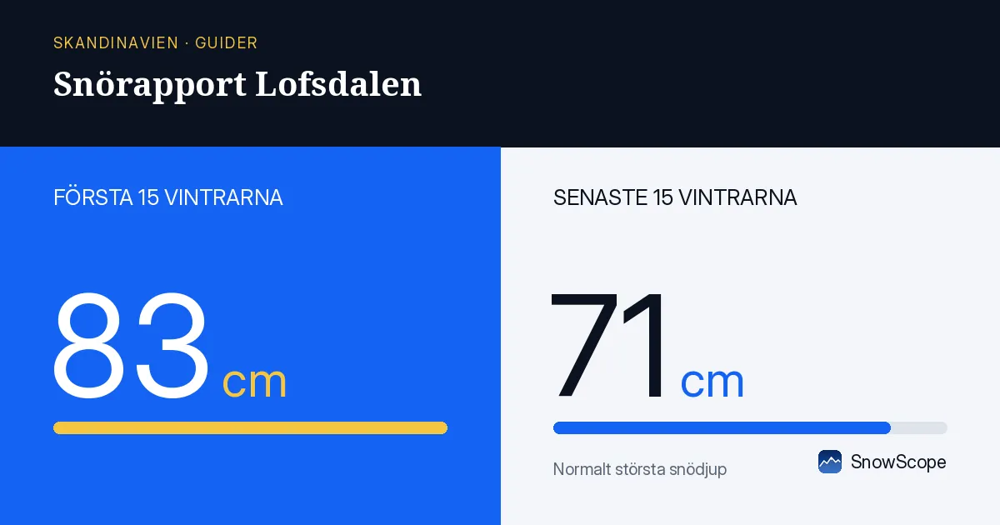
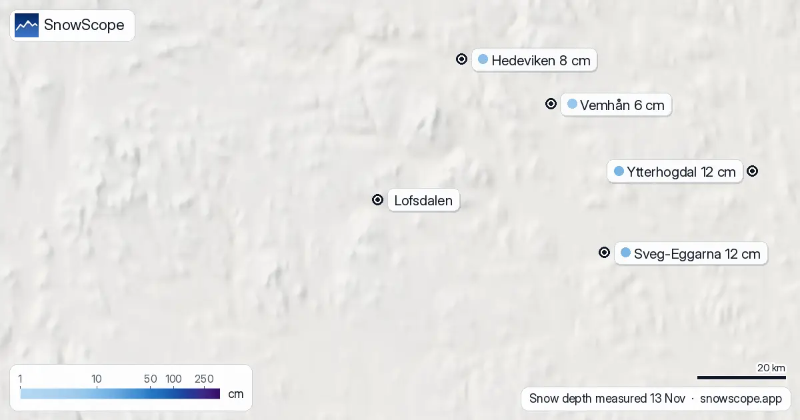

Snörapport Lofsdalen: 6 cm vid den höga stationen, en kall vecka framåt (14 november 2026)
Lofsdalen ligger högre och längre norrut än många svenska skidorter i dalbygderna, vilket förklarar varför det tunna novembertäcket håller sig. Den 13 november registrerade väderstationar omkring skidorten 6 till 8 cm på låga höjder, och snön där är riktigt snö: temperaturerna är låga nog för att hålla den säker den här veckan. Skidorten är stängd fram till 11 december, men de som känner till skogsvägarna och dalbygdens skidörstigar kan redan gå eller skinna.
Se snöprognosen för Lofsdalen live i SnowScope-appenSnödjup, pudervarningar och 3D-kartan, gratis.

Så kom snön
Till och med 10 november var marken här bar. Sedan tog ett lågtryck över och det snöade under var och en av de tre följande dagarna, med mest snöfall 11–12 november. Enligt mätstav vid närmaste station, Häggberget på 682 m (15 km bort), var totalen sedan 1 november 6 cm på morgonen den 12 november. Hedeviken, längre söderut och lägre på 420 m, hade 8 cm den 13 november; Särna, på 425 m och längre österut, höll 7 cm. Den här spridningen speglar dalbygdens blandning av skugga och vind, men alla tre stationer är överens: det finns en riktigt bas nu, inte bara ett tunt snödrev.
Nyckeln till att hålla det här täcket är höjd och breddgrad. Lofsdalen ligger på 629 m vid basen och stiger till 1 106 m. Luftmassan över centrala Härjedalen i mitten av november är för kall för att de milda Atlantenvindarna ska tränga igenom lätt. Det som föll blev snö, och nästa veckas prognos säger samma kalla, torra förhållanden.

Vad nästa sju dagar bär
Prognoserna visar cirka 7 cm nysnö över skidorten under veckan från 14 till 20 november. Osäkerhetsintervallet är 6 till 8 cm, så det är inte en stor snöstorm, men det är tillförlitligt. Nästan ingen av detta kommer som regn; snögränsen ligger kring 320 till 330 m, långt under även basationen. Luften förblir kall, så varje ny centimeter binds och stannar kvar.
Andra prognoser i regionen sträcker sig från 10 till 19 cm på Lofsdalens höjd, så det finns viss spridning. Men alla håller med om att snö nådde marken. Den 21 november bör dalbygden hålla något mellan 10 och 15 cm, beroende på var du mäter. Skidortens mittbackar kommer troligt att se djupet stabilisera sig mot mitten av det intervallet.
Jämfört med tidigare novembrar
Lofsdalens 46 vintrar data (1980–81 till 2025–26) visar att snödjupet vid basen vanligen är 12 cm den 14 november. Den 30 november stiger det till 24 cm, och den 15 december till 32 cm. Just nu, på 6 till 8 cm, ligger skidorten lite bakom det typiska spåret, men bara med ett eller två centimeter. En vinter av tio hade ingen snö alls den 14 november, så en långsam start är inte ovanlig här.
De flesta vintrar toppar sig i mars på omkring 80 cm. Marken är vanligen vit omkring 198 dagar. Förra vintern (2025–26) toppad på 67 cm och hade snötäcke 164 dagar, något kortare än genomsnitt. Vad som spelar roll för skidåkning är inte toppen utan om mitten av vintern byggs upp: före juldagen har denna skidort ofta 39 cm på marken.
Varför Härjedalen är annorlunda än Dalarna
Om du skidåkat på Vemdalen eller Sälen, längre söderut, kanske du märkt att de ofta förlorar sin tidigsäsongssnö till snösmältning eller regn. Lofsdalen, 50 km norrut, brukar behålla den. Anledningen är inte bara den extra höjden: det är luftmassan. Härjedalen i november är längre bort från den varma Atlanten, och bergen tvingar ner kall polarluft från norr oftare. Så ett tunt täcke här är mer stabilt än ett tjockare täcke längre söderut.
Stationerna omkring Lofsdalen berättar den här historien. Sveg-Eggarna och Ytterhogdal, båda mycket lågt (264–371 m) och båda längre söderut eller västerut, drabbades hårdare av den senaste snön—12 cm den 13 november—men det exponerade läget innebär också att de smälter snabbare om varmare luft anländer. Lofsdalens tät skog och högre bas ger bättre skydd.
Vad du kan göra före öppningen
Skidorten öppnar sina liftar inte förrän 11 december, men den första snön är redan användbar. Skogsvägarna och dalbygdens skidörstigar går att åka nu, och en skin uppför de försiktiga backarna omkring sjön är ett bra sätt att spendera en kall morgon. Ta med dig ljus: i mitten av november går solen ner innan 15:00, och nätterna är långa.
I början av december, när liftarna startar, bör djupet vara närmare 30 cm, väl inom komfortzonen för en liten skidort som också använder konstsnö. Prognoskartan visar täcket då. För nu, kolla skidortens webkameror och öppningsbulletin för att bekräfta datumet, och njut av skogen.
Tips för skidåkare
- Det tunna täcket innebär att stenar och stubbar fortfarande kan bryta kantskierna; scouta efter dem i dagsljus och åk försiktigt på okända stigar fram till 20 november.
- Kall luft här håller snön men för dimma och moln mest på eftermiddagarna; åk tidigt om sikten är viktig för dig.
- Nätterna är långa och mörka i mitten av november; planera dalbygdsvandring för de två timmarna omkring mitten av dagen, och ta en pannlampa om du stannar senare.
- I slutet av november, följ skidortens webkameror och snörapporten snarare än fjärra dalbygdsstationer; skogen håller mer än det öppna låglandet.
- Kontrollera Lavinprognoser (Naturvårdsverket) för lavinprognosen innan du åker backkörning.
Om siffrorna
Snödjupen för skidorterna är det djupaste snötäcket på ortens övre backar på det angivna datumet; de är uppskattningar för ett område, inte en mätning på en punkt. Prognoser kan ändras. Läs alltid den officiella lavinprognosen innan du åker offpist.
Officiella lavinprognoser: Lavinprognoser (Naturvårdsverket)
Citera den här rapporten
För forskning, undervisning eller press: siffrorna och diagrammen får återanvändas fritt under CC BY 4.0 med den här källhänvisningen.
SnowScope (2026), Snörapport Lofsdalen: 6 cm vid den höga stationen, en kall vecka framåt (14 november 2026), https://snowscope.app/blog/sv/2026/11/lofsdalen-snow-report-14-november-2026.html, hämtad 2026-11-14
SnowScope (Atlas Labs). (2026, November 14). Snörapport Lofsdalen: 6 cm vid den höga stationen, en kall vecka framåt (14 november 2026). SnowScope snow reports. https://snowscope.app/blog/sv/2026/11/lofsdalen-snow-report-14-november-2026.html
BibTeX
@misc{snowscope2026lofsdalensnowreport14nov,
author = {{SnowScope (Atlas Labs)}},
title = {Snörapport Lofsdalen: 6 cm vid den höga stationen, en kall vecka framåt (14 november 2026)},
year = {2026},
month = nov,
howpublished = {\url{https://snowscope.app/blog/sv/2026/11/lofsdalen-snow-report-14-november-2026.html}},
note = {Published 2026-11-15 09:34 UTC; accessed 2026-11-14}
}· CC BY 4.0 · Metoder, data och verktyg →
Lofsdalen: snö och temperatur efter höjd, i vinter jämfört med förra (verktyg) →
Följ Lofsdalen
Gratis: ett meddelande när nysnö är på väg, och prognosen varje morgon.